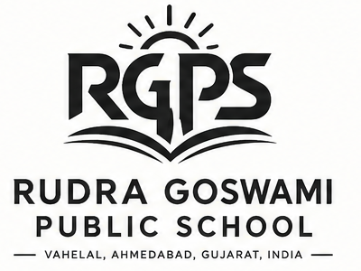

CONTACT
We’d be glad to hear from you.
Rudra Goswami Public School
Vahelal, Ahmedabad, Gujarat, India


LOCATION
Find us in Vahelal.
Vahelal, Ahmedabad, Gujarat, India
⌖Open the exact school locationGoogle Maps pin shared by Rudra Goswami Public SchoolView directions ↗Send an enquiry
This form is a frontend demo and does not send messages.
EXACT MAP PIN
The school’s exact Google Maps location was supplied for this website. Open the RGPS pin and directions in Google Maps ↗